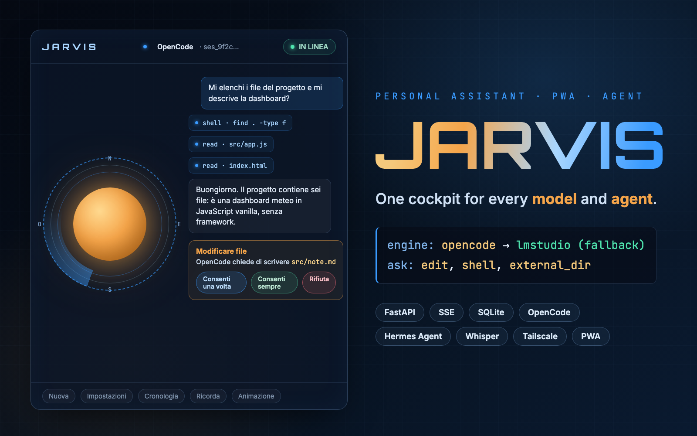
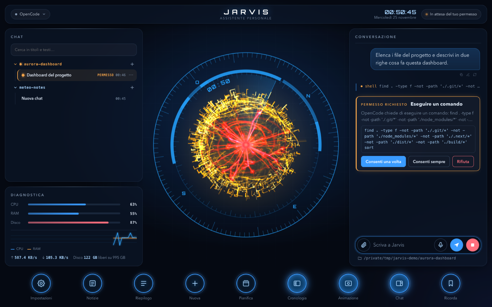
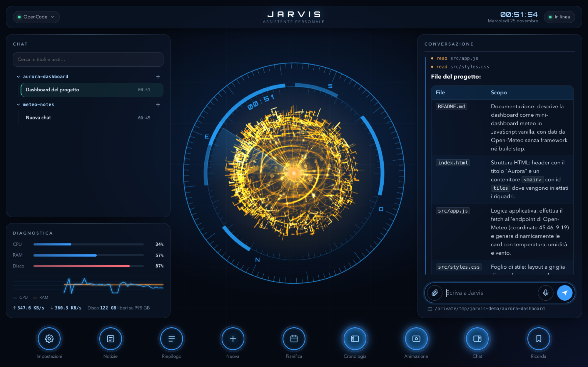

A personal assistant in the style of J.A.R.V.I.S.: one cockpit for every model, and for coding agents that ask before touching anything.
Jarvis is a personal assistant that runs on its own Mac and is reached from every personal device over a private network: a web app — installable on the phone as a PWA — whose face is an animated HUD rather than a chat window, replying in formal Italian with streamed answers.
Under the hood it is a cockpit for AI engines. Plain language models (Groq, OpenAI, LM Studio, Ollama, Unsloth, any OpenAI-compatible endpoint) and full agentic harnesses (Hermes Agent and OpenCode) are added, tested and made default from the settings, at any time and without restarting anything; if the main engine is saturated or unreachable, answers fall back to the local one. Long-term memory keeps durable facts and retrieves them by semantic similarity with local embeddings, web search works without any API key, dictation is transcribed by Whisper and math renders as LaTeX — even offline.
Commanding both a plain model and a coding agent from the same console: the harness keeps its own tools and history, Jarvis keeps the visibility — live activity, per-action permissions, sub-agents — and the human keeps the last word on every file edit and command.

Every chat of the OpenCode engine lives in one project folder, chosen with a folder picker and fixed for the chat's whole life. The left column groups all the chats into a project tree, so several projects and conversations can work at the same time, each with its own streaming turn in the background.
Nothing destructive happens silently: file edits, shell commands and access to folders outside the project each raise a permission card in the conversation — allow once, always, or refuse — and the HUD glows red while the assistant waits for you. Tool calls appear as live activity lines, sub-agents show up as animated cards, and a stop button interrupts the agent at any moment.

A golden sphere sits at the centre of the screen as compass and status light: calm when idle, spinning while it thinks, red when it is waiting for a permission. Three layouts — full, sphere only, neural brain — are picked in the settings and remembered on each device.
Around it, a real cockpit: a diagnostics panel with live CPU, RAM, disk and network trends, a quick-action bar, the engine chip showing who is answering, and a conversation panel that renders streamed answers with tables, code and formulas.
A single server exposes a streaming API over server-sent events and serves the interface; each chat has its own history, token counter, cancellation flag and turn lock, so several conversations — including agent turns — can run in background at the same time. History, memory facts and engine profiles live in one SQLite file, while embeddings are computed locally.
With a plain model the assistant runs the model-and-tools loop itself. With a harness it plays a different role: only your persona and the last message are forwarded, the harness keeps its own tools and history, and the server watches its event stream to repaint activity, permissions and sub-agents in real time. The frontend is a dependency-free vanilla-JS PWA — canvas HUD, local fonts, local math rendering — so the whole thing works even with the network cut, apart from the model itself.
Streaming API server and static interface, listening only on the local loopback.
Chats, memory facts and engine profiles, editable on the fly from the settings.
Agentic harnesses driven as engines, with their tools, sessions and permission flow.
Transcription of voice dictation, so you can speak to the assistant.
Private HTTPS access from every device without exposing the server publicly.
Installable on the phone, with math formulas rendered locally from bundled assets.